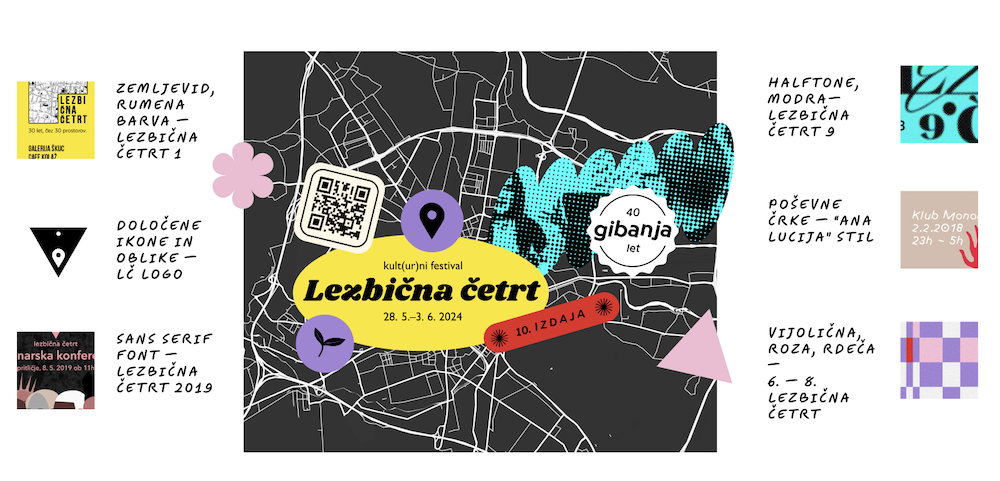
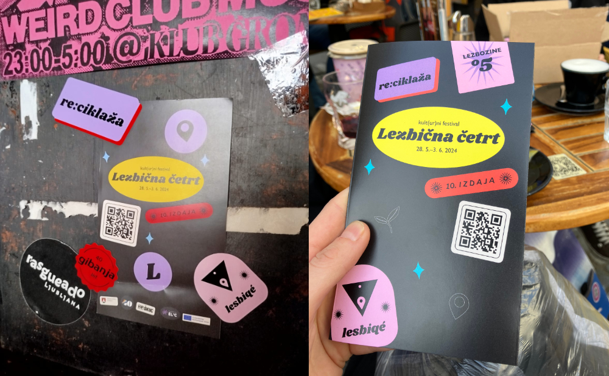
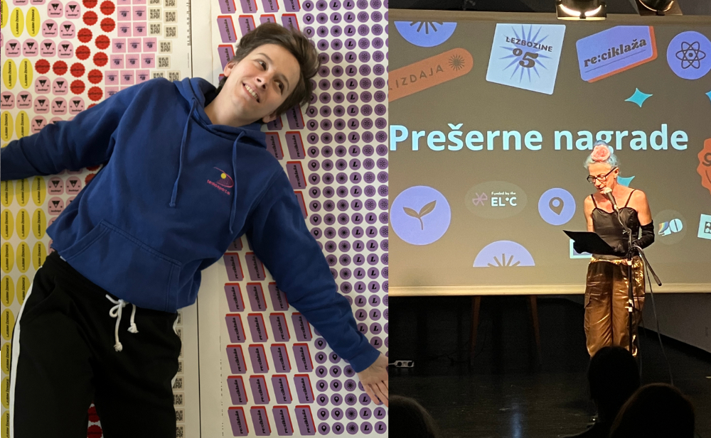

Collaborative graphic design for the festival of lesbian culture
| Name | Tags | Created | Size |
|---|---|---|---|
| Parent Directory | festival, archive, LGBT, design | 2024-05-01 11:01 | 69MB |
Lesbian Quarter Festival is an annual festival celebrating lesbian culture in Ljubljana. The theme of the 2024 festival was "Recycling".
For inspiration, I analysed the past decades of the LGBTIQ movement's graphic design — from the past editions of the festival's programme designs, to the first magazine insert discussing lesbian love in Slovenia (then Yugoslavia) published in 1987.
As an avid collector of stickers and badges, I was drawn to create a design concept that included physical and digital stickers. This approach aestethically combined different styles drawn from history, and enabled a modularity that allowed everyone — from the marketing team to festival attendees — participate in the artwork. The result was a collage of refrerences to past concepts with introduction of new graphic motives that produced a memorable branding, as well as a bonus sticker-sharing collaborative experience at the festival.


